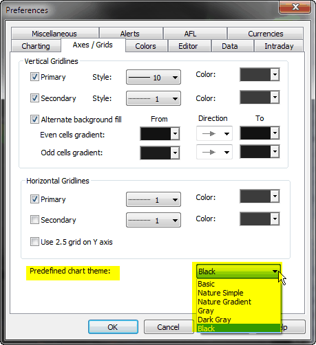
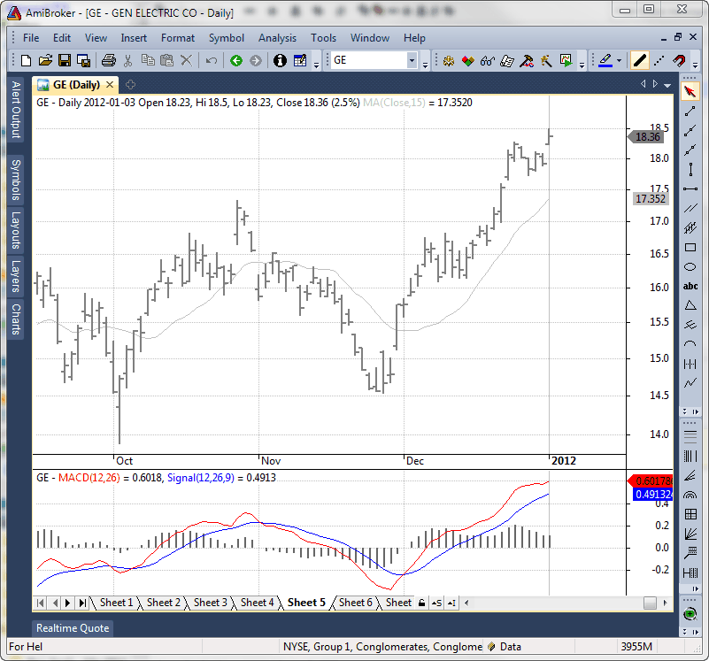
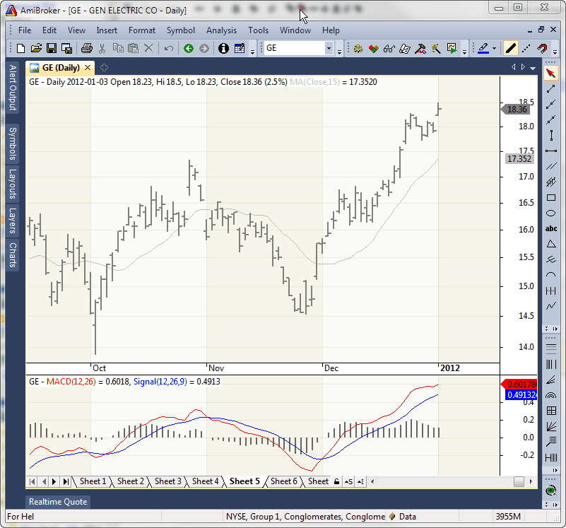
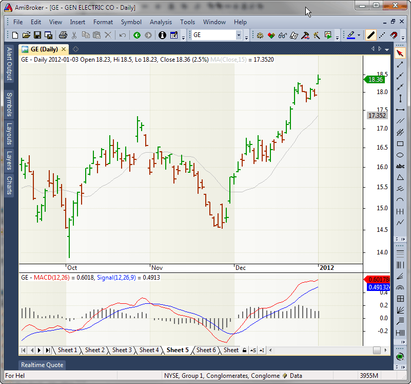
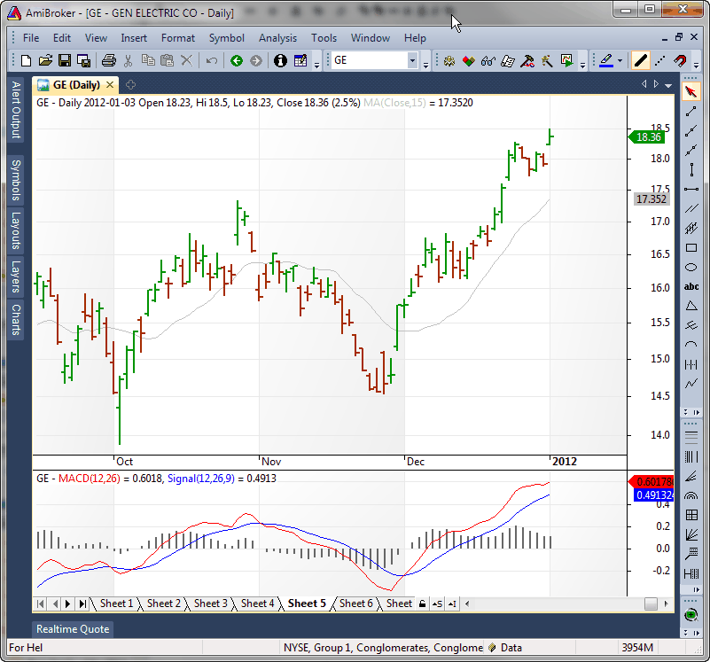
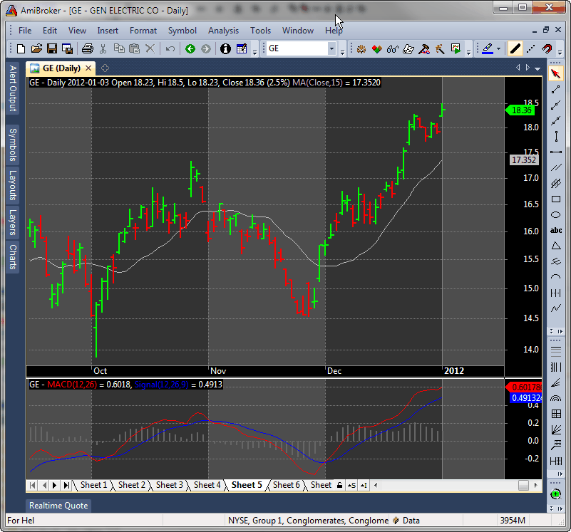
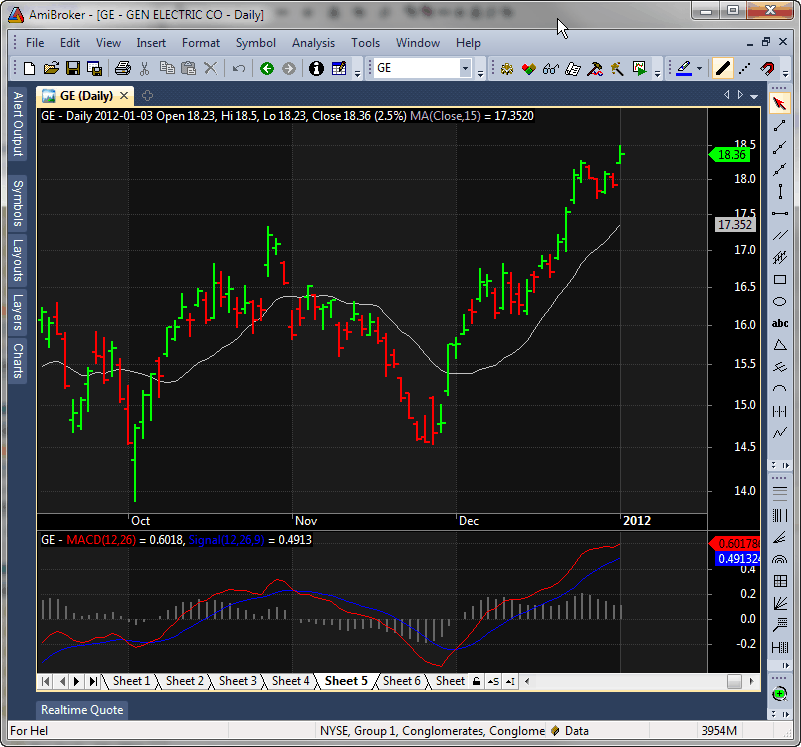

AmiBroker 5.52 introduces 6 pre-defined chart themes switchable in Tools->Preferences, "Axes & Grid" tab:

1. Basic Theme

2. Nature Simple Theme

3. Nature Gradient Theme

4. Gray Theme

5. Dark Gray Theme

6. Black Theme
